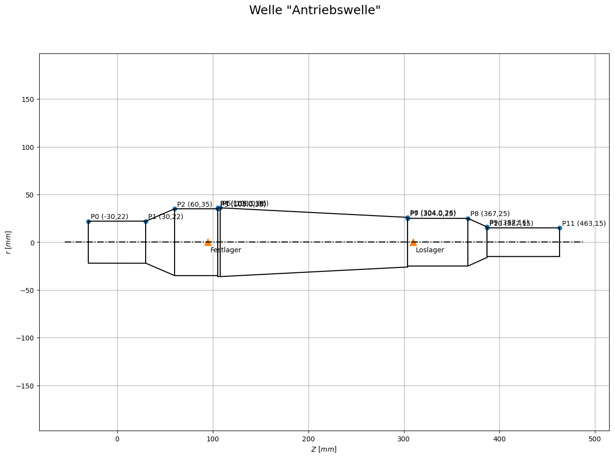
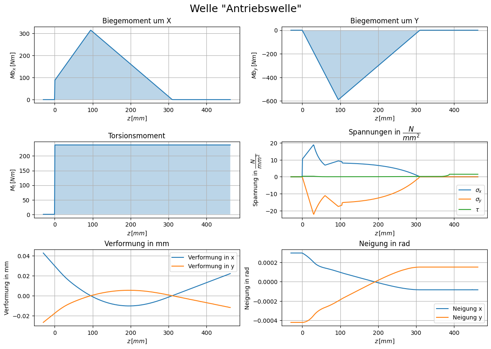
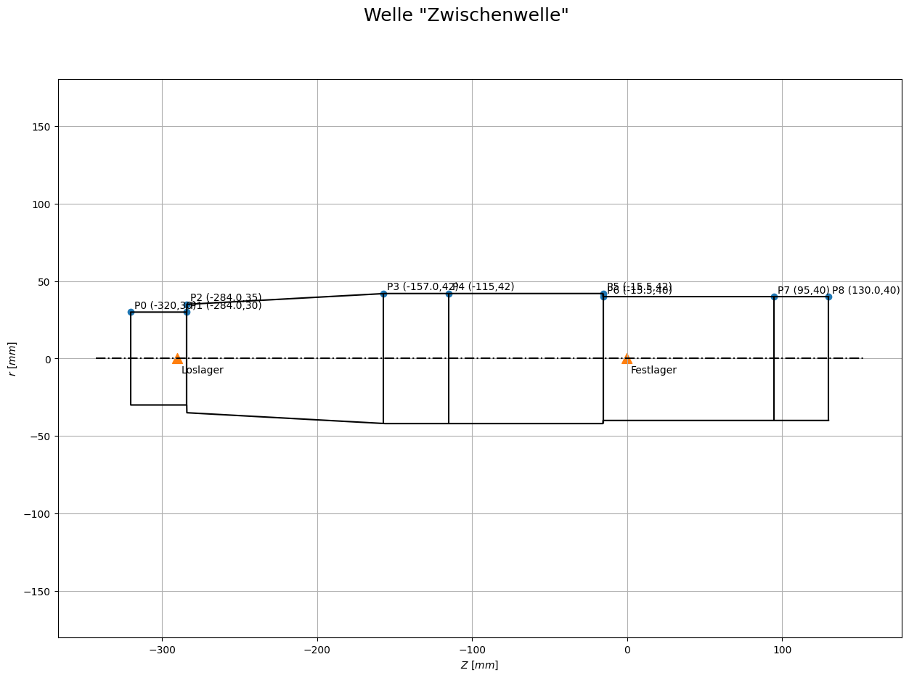
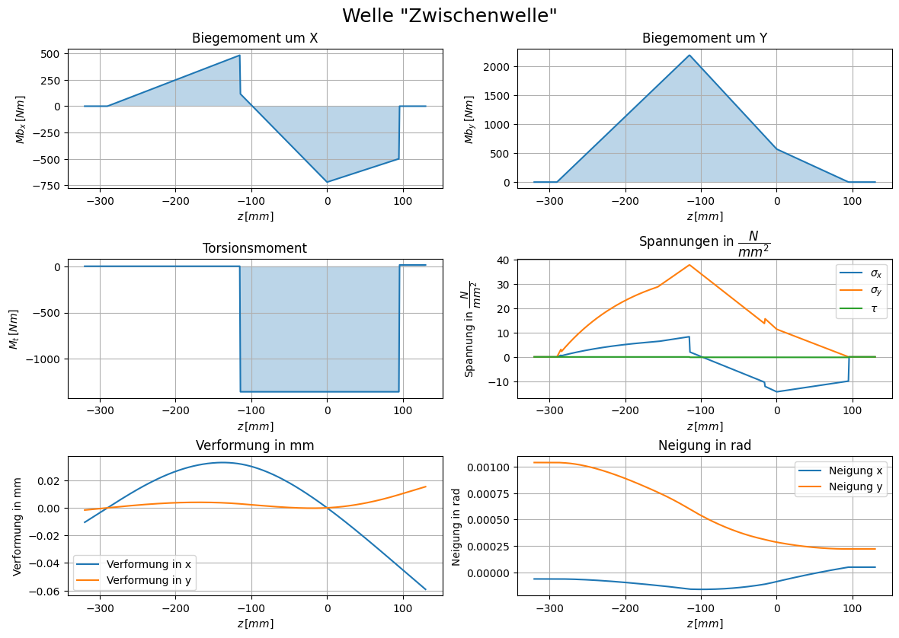
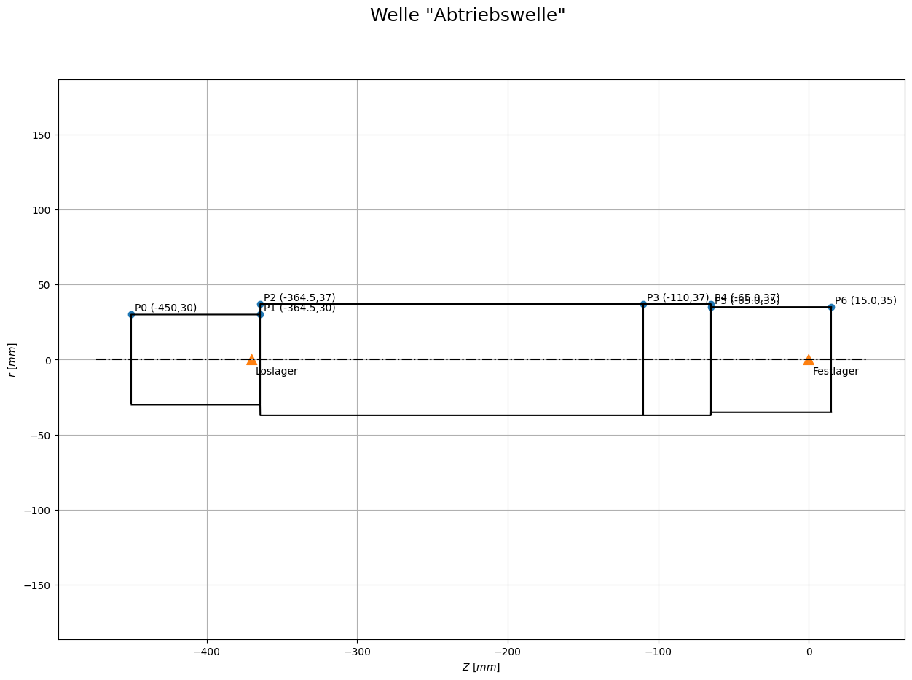
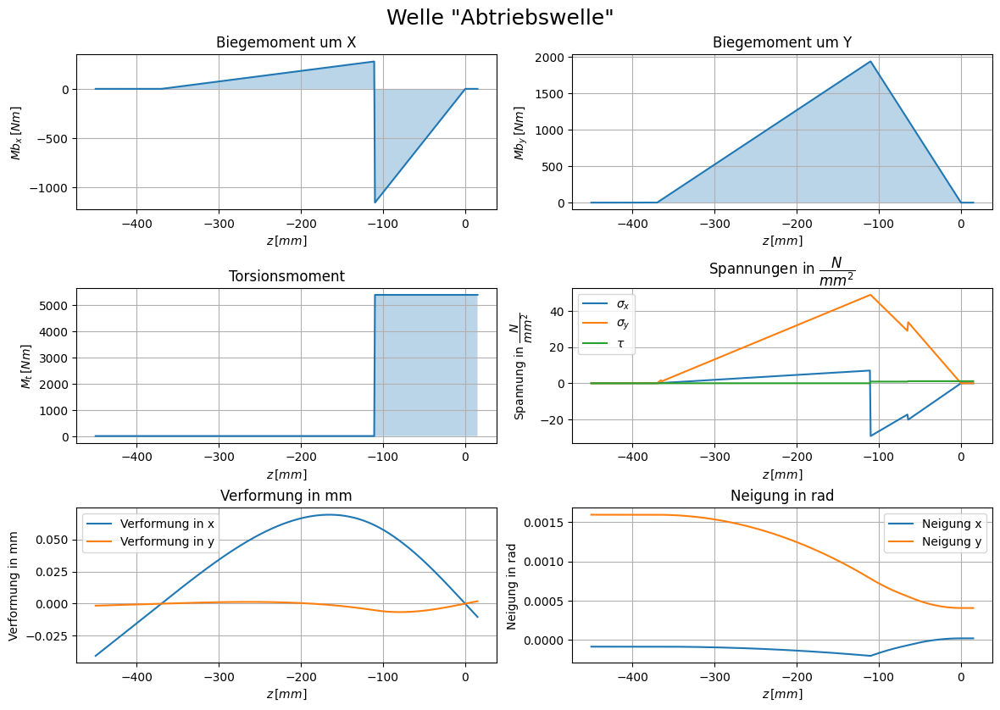

from Lager import klassen as lager # Eigene Lagerklasse
from Wellen import Klassen as welle # Eigene Wellenklasse
import numpy as np # Python Modul für numerische MathematikWellen- und Lagernachweis
Zuerst werden die benötigten Dateien und Module importiert.
Um die Betriebsviskosität des verwendeten Öls zu ermitteln, benötigt man 2 bekannte Datenpunkte aus dem Viskositäts-Temperatur Diagramm. Die Nachfolgenden Listen enthalten für das jeweilige Öl diese 2 Punkte in der Form [t1,nu1,t2,nu2] und wurden dem Diagramm aus dem Übungsskript entnommen.
visk_10 = [4,76,32,10]
visk_15 = [4,91,54,10]
visk_22 = [4,105,84,10]
visk_32 = [4,115,128,10]
visk_46 = [4,124,260,10]
visk_68 = [5.1,120,300,16]
visk_100 = [6.5,120,300,22]
visk_150 = [9,120,300,29]
visk_220 = [11,120,300,35]
visk_320 = [14,120,300,41]
visk_460 = [18,120,300,47]
visk_680 = [22.5,120,300,55]
visk_1000 = [27.5,120,300,60]
visk_1500 = [35,120,300,66]
Öl = visk_1000Die Variable Öl wird später an die Lagerklassen gegeben und kann hier global für alle Lager angepasst werden.
Antriebswelle
Da die Absatzpositionen der Welle von der Lagerbreite abhängen (um die gegebenen Lagerabstände zu wahren) wird der Nachweis der Welle zusätzlich geführt. Im nachfolgenden Codeblock wird die Antriebswelle erzeugt und Geometrie sowie Kräfte zugewiesen. Die Ausgabe beinhaltet die ermittelten maximalen Verformungen und Neigungen der Welle, welche mit den zulässigen Verformungen aus der Norm abgeglichen werden können.
# Lagerpositionen
Festlager = 95
Loslager = 310
B_fl = 20 # Breite Festlager
B_ll = 12 # Breite Loslager
Fr = -2404
Ft = 6207
Fa = -2259
geometrie = (
(-30, 22),
(30, 22),
(60, 35),
#Festlager
(Festlager+B_fl/2,35),
(Festlager+B_fl/2,36),
(Festlager+B_fl/2+3, 36),
(Loslager-B_ll/2,26),
(Loslager-B_ll/2, 25),
#Loslager
(367, 25),
(387, 16),
(387, 15),
(463, 15)
)
Antriebswelle = welle.Welle("Antriebswelle",Festlager,Loslager,"42CrMo4","nein")
Antriebswelle.set_geometrie(geometrie)
# Kräfte aus z11
Antriebswelle.set_Kraft(Fr,"r",0,-38.31, 0)
Antriebswelle.set_Kraft(Ft,"t",0,-38.31, 0)
Antriebswelle.set_Kraft(Fa,"a",0,-38.31, 0)
Antriebswelle.lagerkräfte_berechnen()
Antriebswelle.verformung_berechnen()
print("Neigung FLx: ",np.rad2deg(Antriebswelle.NeigungFLx),"°")
print("Neigung FLy: ",np.rad2deg(Antriebswelle.NeigungFLy),"°")
print("Neigung LLx: ",np.rad2deg(Antriebswelle.NeigungLLx),"°")
print("Neigung LLy: ",np.rad2deg(Antriebswelle.NeigungLLy),"°")
print("\nMaximaler Verformungsgradient in X: ",Antriebswelle.maxVerf_x_PM,"mm/m")
print("Maximaler Verformungsgradient in Y: ",Antriebswelle.maxVerf_y_PM,"mm/m")
print("Maximale Verformung Ges: ",Antriebswelle.maxVerfPM_ges,"mm/m")Neigung FLx: 0.005898812142012742 °
Neigung FLy: -0.011392640496606024 °
Neigung LLx: -0.004819142436407212 °
Neigung LLy: 0.00867375348272645 °
Maximaler Verformungsgradient in X: 0.19861999272007497 mm/m
Maximaler Verformungsgradient in Y: 0.02534793933579881 mm/m
Maximale Verformung Ges: 0.23415765828104745 mm/mAntriebswelle.welle_darstellen()
Antriebswelle.plots_alles()
Absätze
Die Klasse Welle_Absatz wird mit folgenden Argumenten erzeugt: - welle: Die Instanz der Klasse Welle auf der sich der Absatz befindet - z: Z Koordinate des Absatzes auf der Welle - art: Die Art des Nachweises - Rz: Rauheit der Oberfläche - *args: Zusätzliche Argumente. Bei art=“Absatz” benötigt man z.B. den Radius der Rundung
z_pos = [geometrie[1][0],geometrie[3][0]]
Absätze = [welle.Welle_Absatz(Antriebswelle,z,"Absatz",20,2) for z in z_pos]Der Syntax [... for ... in ...] erzeugt eine Liste bei denen die Ergebnisse der For-Schleife in der Liste gespeichert werden. Somit entsteht eine Liste mit so vielen Absätzen, wie es Z-Koordinaten in z_pos gibt.
For Schleifen in Python iterieren immer durch eine Art Liste, wobei die Laufvariable die Werte der Liste annimmt. Dies wird auch als “generisches For” bezeichnet.
Die nachfolgende For-Schleife geht durch jeden Absatz in der Liste aller Absätze und gibt die Sicherheiten S_F (Sicherheit gegen Fließen) und S_D (Sicherheit gegen Dauerbruch) aus.
print("\tS_F\tS_D")
for i,Absatz in enumerate(Absätze):
Sf,Sd = Absatz.Sicherheiten()[:2]
print(i,Sf,Sd,sep="\t") S_F S_D
0 31.293 10.544
1 46.604 11.971Lager
Hier werden die berechneten Lagerkräfte in einer ASCII Tabelle ausgegeben. Die Funktion ist eine Methode der Klasse Welle.
Antriebswelle.print_Lagerkräfte()
Lagerkraefte der Welle "Antriebswelle"
------------------------------------------------
| Fx | Fy | Fz | z |
------------------------------------------------
|0: -8949.628 | 0 | 0 | 95 |
------------------------------------------------
|1: 0 | 3868.755 | 0 | 95 |
------------------------------------------------
|2: 0 | 0 | 2259 | 95 |
------------------------------------------------
|3: 2742.628 | 0 | 0 | 310 |
------------------------------------------------
|4: 0 |-1464.755 | 0 | 310 |
------------------------------------------------Lager A - Festlager
Die Daten des Lagers werden über eine ID aus den entsprechenden .csv Dateien extrahiert. Die Datei wurde aus der PDF des SKF Wälzlagerkataloges zur vereinfachten Datenextraktion erzeugt. Die IDs wurden im Nachhinein hinzugefügt.
ID_A = 421
Fr_A = np.sqrt(8860.233**2+5127.905**2)/1000 # in kN
LagerA = lager.Rillenkugellager("Festlager A",ID_A,1500,Fr_A,2.237,Öl,70,0.6)
print("Erweiterte Lebensdauer [h]: ",LagerA.erweiterte_Lebensdauer_in_Stunden())Erweiterte Lebensdauer [h]: 24128.669153664345LagerA.Kurzzeichen'6014 M'Lager B - Loslager
ID_B = 327
Fr_B = np.sqrt(2715**2+1847.905**2)/1000 # in kN
LagerB = lager.Rillenkugellager("Loslager B",ID_B,1500,Fr_B,0,Öl,70,0.6)
print("Erweiterte Lebensdauer [h]: ",LagerB.erweiterte_Lebensdauer_in_Stunden())Erweiterte Lebensdauer [h]: 120151.55510946235LagerB.Kurzzeichen'61910-2RS1'Zwischenwelle
l_AB = 290
l_z22 = 115
l_z21 = 95
Festlager = 0
Loslager = -l_AB
B_fl = 31
B_ll = 12
B_Zahnrad = 60
B_Ritzel = 80
geometrie = (
(-l_AB-30,30),
# Loslager
(-l_AB+B_ll/2,30),
(-l_AB+B_ll/2,35),
(-l_z22-B_Ritzel/2-2,42),
(-l_z22,42),# Ritzel
(-B_fl/2,42),
(-B_fl/2,40),
# Festlager
(l_z21,40),# Zahnrad
(l_z21+B_Zahnrad/2+5,40)
)
Zwischenwelle = welle.Welle("Zwischenwelle",Festlager,Loslager,"42CrMo4","nein")
Zwischenwelle.set_geometrie(geometrie)
# z12
Zwischenwelle.set_Kraft(-6021,"t",l_z21,227.47,0)
Zwischenwelle.set_Kraft(2332,"r",l_z21,227.47,0)
Zwischenwelle.set_Kraft(2191,"a",l_z21,227.47,0)
#z21
Zwischenwelle.set_Kraft(-26727,"t",-l_z22,50.73,0)
Zwischenwelle.set_Kraft(10071,"r",-l_z22,50.73,0)
Zwischenwelle.set_Kraft(-7162,"a",-l_z22,50.73,0)
Zwischenwelle.lagerkräfte_berechnen()
Zwischenwelle.verformung_berechnen()
print("Neigung FLx: ",np.rad2deg(Zwischenwelle.NeigungFLx))
print("Neigung FLy: ",np.rad2deg(Zwischenwelle.NeigungFLy))
print("Neigung LLx: ",np.rad2deg(Zwischenwelle.NeigungLLx))
print("Neigung LLy: ",np.rad2deg(Zwischenwelle.NeigungLLy))
print("\nMaximaler Verformungsgradient in X: ",Zwischenwelle.maxVerf_x_PM)
print("Maximaler Verformungsgradient in Y: ",Zwischenwelle.maxVerf_y_PM)
print("Maximale Verformung Ges: ",Zwischenwelle.maxVerfPM_ges)Neigung FLx: -0.005105796906706975
Neigung FLy: -0.004881999692148925
Neigung LLx: -0.0036570241679411623
Neigung LLy: -0.028044472043016327
Maximaler Verformungsgradient in X: 0.058521995926389354
Maximaler Verformungsgradient in Y: 0.05291582090771304
Maximale Verformung Ges: 0.07889808685605433Zwischenwelle.welle_darstellen()
Zwischenwelle.plots_alles()
Absätze
z_pos_Absätze = [geometrie[1][0],geometrie[6][0]]
z_pos_Pressverbände = [geometrie[4][0],geometrie[7][0]]
Absätze = [welle.Welle_Absatz(Zwischenwelle,z,"Absatz",20,2) for z in z_pos_Absätze]+[welle.Welle_Absatz(Zwischenwelle,z,"Pressverbindung",20) for z in z_pos_Pressverbände]
Absätze[Absatz bei -284.0,
Absatz bei -15.5,
Pressverbindung bei -115,
Pressverbindung bei 95]print("\tS_F\tS_D")
for i,Absatz in enumerate(Absätze):
Sf,Sd = Absatz.Sicherheiten()[:2]
print(i,Sf,Sd,sep="\t") S_F S_D
0 362.401 65.856
1 74.018 15.606
2 32.929 4.879
3 91.15 13.51Lager
Zwischenwelle.print_Lagerkräfte()
Lagerkraefte der Welle "Zwischenwelle"
------------------------------------------------
| Fx | Fy | Fz | z |
------------------------------------------------
|0: 24121.759 | 0 | 0 | 0 |
------------------------------------------------
|1: 0 |-9638.978 | 0 | 0 |
------------------------------------------------
|2: 0 | 0 | 4971 | 0 |
------------------------------------------------
|3: 8626.241 | 0 | 0 | -290 |
------------------------------------------------
|4: 0 |-2764.022 | 0 | -290 |
------------------------------------------------Lager A - Festlager
ID_A = 302
Fr_A = np.sqrt(24121.8**2+9638.978**2)/1000 # in kN
LagerA = lager.Rillenkugellager("Festlager A",ID_A,252.6,Fr_A,4.971,Öl,70,0.6)
print("Erweiterte Lebensdauer [h]: ",LagerA.erweiterte_Lebensdauer_in_Stunden())Erweiterte Lebensdauer [h]: 7253.21100707639LagerA.Kurzzeichen'6408'Lager B - Loslager
ID_B = 376
Fr_B = np.sqrt(8626**2+2764**2)/1000 # in kN
LagerB = lager.Rillenkugellager("Loslager B",ID_B,252.6,Fr_B,0,Öl,70,0.6)
print("Erweiterte Lebensdauer [h]: ",LagerB.erweiterte_Lebensdauer_in_Stunden())Erweiterte Lebensdauer [h]: 16478.76996878527LagerB.Kurzzeichen'16012'Abtriebswelle
l_AB = 370
l_z3 = 110
Festlager = 0
Loslager = -l_AB
B_fl = 24
B_ll = 11
B_Zahnrad = 80
geometrie = (
(-l_AB-80,30),
(-l_AB+B_ll/2,30),
(-l_AB+B_ll/2,37),
(-l_z3,37), # Rad
(-l_z3+B_Zahnrad/2+5,37),
(-l_z3+B_Zahnrad/2+5,35),
(B_fl/2+3,35),
)
Abtriebswelle = welle.Welle("Abtriebswelle",Festlager,Loslager,"42CrMo4","nein")
Abtriebswelle.set_geometrie(geometrie)
# z22
Abtriebswelle.set_Kraft(25131,"t",-l_z3,-213.785,0)
Abtriebswelle.set_Kraft(-9469,"r",-l_z3,-213.785,0)
Abtriebswelle.set_Kraft(6734,"a",-l_z3,-213.785,0)
Abtriebswelle.lagerkräfte_berechnen()
Abtriebswelle.verformung_berechnen()
print("Neigung FLx: ",np.rad2deg(Abtriebswelle.NeigungFLx))
print("Neigung FLy: ",np.rad2deg(Abtriebswelle.NeigungFLy))
print("Neigung LLx: ",np.rad2deg(Abtriebswelle.NeigungLLx))
print("Neigung LLy: ",np.rad2deg(Abtriebswelle.NeigungLLy))
print("\nMaximaler Verformungsgradient in X: ",Abtriebswelle.maxVerf_x_PM)
print("Maximaler Verformungsgradient in Y: ",Abtriebswelle.maxVerf_y_PM)
print("Maximale Verformung Ges: ",Abtriebswelle.maxVerfPM_ges)Neigung FLx: 0.0008931175514009467
Neigung FLy: 0.023102216170225457
Neigung LLx: -0.005215988264785657
Neigung LLy: 0.09146309201805655
Maximaler Verformungsgradient in X: 0.18670092100071084
Maximaler Verformungsgradient in Y: 0.005116798697417159
Maximale Verformung Ges: 0.18672051984673035Abtriebswelle.welle_darstellen()
Abtriebswelle.plots_alles()
Absätze
z_pos_Absätze = [geometrie[1][0],geometrie[5][0]]
z_pos_Pressverbände = [geometrie[3][0]]
Absätze = [welle.Welle_Absatz(Abtriebswelle,z,"Absatz",20,2) for z in z_pos_Absätze]+[welle.Welle_Absatz(Abtriebswelle,z,"Pressverbindung",20) for z in z_pos_Pressverbände]
Absätze[Absatz bei -364.5, Absatz bei -65.0, Pressverbindung bei -110]print("\tS_F\tS_D")
for i,Absatz in enumerate(Absätze):
Sf,Sd = Absatz.Sicherheiten()[:2]
print(i,Sf,Sd,sep="\t") S_F S_D
0 469.585 83.179
1 26.081 5.558
2 18.624 2.754Lager
Abtriebswelle.print_Lagerkräfte()
Lagerkraefte der Welle "Abtriebswelle"
------------------------------------------------
| Fx | Fy | Fz | z |
------------------------------------------------
|0: -17659.622| 0 | 0 | 0 |
------------------------------------------------
|1: 0 |10544.779 | 0 | 0 |
------------------------------------------------
|2: 0 | 0 | -6734 | 0 |
------------------------------------------------
|3: -7471.378 | 0 | 0 | -370 |
------------------------------------------------
|4: 0 |-1075.779 | 0 | -370 |
------------------------------------------------Lager A - Festlager
ID_A = 425
Fr_A = np.sqrt(17660**2+10545**2)/1000 # in kN
LagerA = lager.Rillenkugellager("Festlager A",ID_A,60,Fr_A,6.734,Öl,70,0.6)
print("Erweiterte Lebensdauer [h]: ",LagerA.erweiterte_Lebensdauer_in_Stunden())Erweiterte Lebensdauer [h]: 15846.226854777358LagerA.Kurzzeichen'6214 M'Lager B - Loslager
ID_B = 376
Fr_B = np.sqrt(7471**2+1076**2)/1000 # in kN
LagerB = lager.Rillenkugellager("Loslager B",ID_B,60,Fr_B,0,Öl,70,0.6)
print("Erweiterte Lebensdauer [h]: ",LagerB.erweiterte_Lebensdauer_in_Stunden())Erweiterte Lebensdauer [h]: 25732.538309644282LagerB.Kurzzeichen'16012'